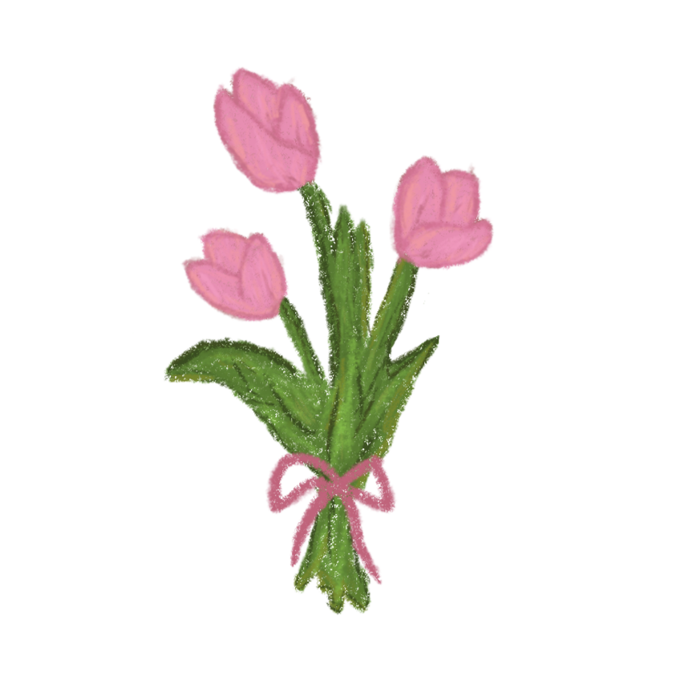

Happy First Monthsary

happy 1st monthsary kayce ! this is the first to many months we'd be together, it still feels surreal that we're together. i can't fathom it and everytime i'm reminded, i just get emotional and be reminded of you. an aromantic with a hopeless romantic, our love story was the most unanticipated relationship to form just 5 days before 2024 ended. it has officially been 209 days since we've met and 30 days since we've been in a relationship. it feels inconceivable to even comprehend that we're a couple, we're lovers—we're in a romantic relationship. so i should thank you, for the first time ever, for this relationship and for accepting my love. thank you not just for your love but your existence, you make my life a better place. not just my life but the world, you've done so much sa faci, to your friends, sa school, the way you remind people of works, and the way you help out, and the way you write literature that inspires people. having you in my life has changed how i view it thanks to you, i've become more enthusiastic and look at life in a positive way.
the past 30 days, for the first time we've called each other baby, we've talked not as friends, but as lovers, and the joy and growth you've taught me through inspiration—i'm eternally grateful for them, and i am eternally grateful for you. once again, thank you so much, kayce. the past month we've had a lot of great moments as lovers, we've debated a lot and made interesting conversations. but it isn't just about the past month, we can even go back as far to our first time meeting, who would've thought the person i was ranting na "i hate the thought of having a gf" or "i wonder who my gf would be" would actuallly be you, baby. i can't believe any of them.
i admire and love everything about you. yesterday i cried about your values and your reposts beause of how thoughtful all of it were and how cracks of your personality are exuding from your soul for people deeply connected to you to smell. i just cried about the way you think, the fact that my girlfriend is this complex regaleous woman. that complexity makes you so attractive, and i'm so deeply attracted to you. you can say i'm attractest to you or something. it's just the fact that you think of others and you're so thoughtful that it makese me emotional everytime. i admire every single thing about you kayce, your black, fine hair, your new clear glasses, your beautiful eyebrows, your nose that felt like bob ross designed, your soft rosy pink lips, and your smooth delicate skin. your eyes that feels like a movie—something i could watch for hours and then tell kayce everything about it, and i'm doing it right now. i love your personality and attitude as well, the way you treat people and view life and its complexities, and even though you've had your hardships you continue to treat people kindly. it's also admiring to see that you're not as passive anymore. i could list a whole lot more but i hope you achieved a grasp that i love every single quality you have. you don't have to find something perfect and flawless for you to love it, yet it's weird because when i love you, what could be considered as flaws begin to be the very thing that makes you beautiful, probably because it makes you look like "kayce" more, which is still you. so i love you being you.
being with you for 209 days has shaped me in ways i never imagined. what once an immature kid who just has a normal extraordinary life became this goal-driven, growth-thirsty, philosophically inclined, and self-aware person. you've said recently that i'm so self aware and conscious about myself, and i believe that's really soothing to hear given that you've thought me to be more conscious about myself to grow, i wouldn't find my bad habits if i were passive, which you have mentioned on our new year's resolution. you've thought me to embrace challenges, and to find beauty in the present. through your support and love, i've learned to become the best version of myself, you've always encouraged me that i can change and be a better person and that you'd support me. i'm endlessly beholden to you—in a good way for the ways you've changed me, not as a mother caring for her child. but as a partner who share my joyous moment, sad moments, and anything i say. i believe that debt would be never be paid, but the only way for me to pay that debt is to repay everything you've done to me and show that effort back. and it would never be paid because it's eternal so i'd love you eternally.
i'm filled with anticipation for the moments that await us, the next month would be filled with new adversaries yet new way to enjoy life. i'm excited to walk this long journey with you, my love. i look forward to walking this long meaningful path with you, hand in hand, soon physically. i promise. i just dream of us growing as individuals and growing as partners, like what we're doing now, celebrating our first to many months of our romantic relationship. to think i wasn't even looking for anything, i wasn't even anticipating for a girl, or a lover, or anything like that, yet when you came, you changed that. i knew i needed to serve you and love you because you are deserving of it, the amount of love you exude is how much i want to give back to you sevenfold.
kayce, i promise to remain by your side, i would stay in every moment. i won't stay because you're convenient to me, i could never think of that. i am here because i deeply love you. i'm not here because of your convenience and comfort, i am here for our future, for how much i deeply care about you, and because i get to watch and live with the person that makes this world better. people like you make the earth brighter. and i'm incredibly fortunate that i share this life with you.
once again, happy 1st month of being lovers, baby. i am forever grateful for you, and with all that i am, i love you, always—and in all ways.
all my heart,
rez